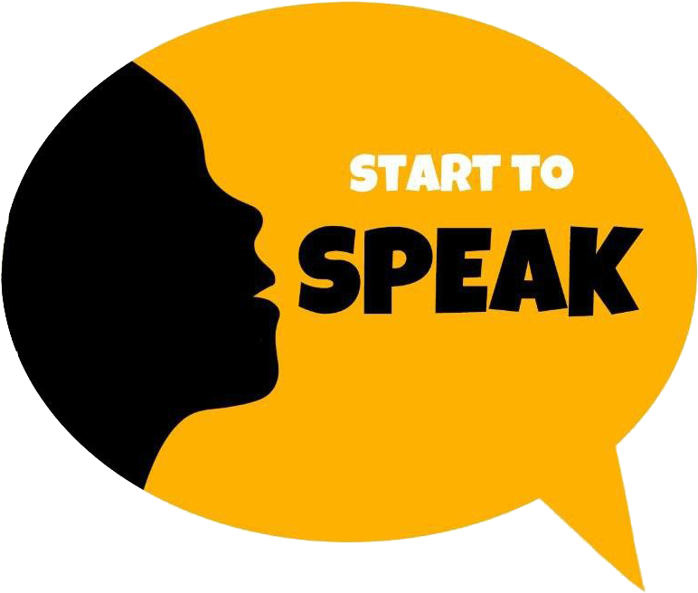

<!DOCTYPE html>
<html lang="en"></html>
<head>
  <meta charset="UTF-8"/>
  <meta name="viewport" content="width=device-width, initial-scale=1"/>
  <title>Онлайн-школа английского языка</title>
  <!--css-->
  <link rel="stylesheet" href="./css/styles.min.css"/>
  <link rel="stylesheet" href="https://use.fontawesome.com/releases/v5.6.1/css/all.css"/>
</head>
<body>
  <div class="wrapper">
    <!--header-->
    <header class="header">
      <div class="header-container">
        <div class="header_body"><a class="header_logo" href=""></a>
          <div class="header_burger"><span></span></div>
          <nav class="header_menu">
            <ul class="d-flex header_list">
              <li><a class="header_link" href="course.html">Курсы</a></li>
              <li><a class="header_link" href="">Акции</a></li>
              <li><a class="header_link" href="">Обо мне</a></li>
              <li><a class="header_link" href="">Отзывы</a></li>
            </ul>
          </nav>
          <div class="header_contacts d-flex"><a class="top-content_comein" href="">Вход/регистрация</a></div>
        </div>
      </div>
    </header>
    <div class="header-aside_body">
      <ul>
        <li><a href=""></a></li>
        <li><a href=""></a></li>
      </ul>
    </div>
    <!--end header-->
    <section>
      <div class="course-podbor-top width1140 d-flex">
        <h2>Как подобрать онлайн курс</h2>
        <p>Онлайн-курсов английского языка так много, что понять, какой из них подойдет именно вам, очень трудно. <br><br><br> Начать конечно же лучше  всего с определения своего текущего уровня, Вы можете определить его самостоятельно пройдя онлайн-тест или пройти тест в скайп с преподавателем.</p>
        <div class="course-buttons d-flex"><a class="btn-yellow" href="">Онлайн-тест</a><a class="btn-yellow" href="">Скайп-тест</a></div>
      </div>
      <div class="course-pyramide">
        <div class="pyramide d-flex">
          <div class="pyramide-txtzone">
            <p class="course-super-top">Итак, степень владения английским языком принято разделять cогласно общеевропейской компетенции владения иностранным языком (CEFR) на 6 уровней. <br><br> Согласно этой системе, знания иностранного языка учащихся разделяют на 3 группы, каждая из которых в свою очередь делится на 2. Уровни владения английским  языком по шкале CEFR представлены ниже.</p>
            <p class="course-middle-p">Наши занятия разбиты на два блока, от начинающего к промежуточному и от промежуточного до уверенного среднего, что во-первых помогает вам значительно соркатить материальные расходы в 2 раза и вы платите не за 4 курса, а всего за 2, а во-вторых сокращает <br>временных затраты.</p>
            <p class="course-attention">Для advanced и upper-intermediate необходимо участие репетитора!!!</p>
          </div>
          <div class="pyramide-blocks">
            <div class="advanced d-flex"><span>Advanced</span>
              <p class="about-advanced"><strong>Advanced Продвинутый уровень английского языка <br> Словарный запас: 3750—4500 слов </strong><br> Понимаете практически все услышанное и прочитанное Можете обобщить информацию из различных устных и письменных источников, оформляя доводы и мнения в виде связного текста Можете говорить на любую тему без подготовки, точно и без затруднений выражая свою мысль, различая малейшие оттенки значений даже в самых сложных ситуациях</p>
            </div>
            <div class="upper-intermediate d-flex"><span>Upper-intermediate</span>
              <p class="about-upper"><strong>Vantage or upper intermediate «Превосходство» или средне-продвинутый уровень английского языка <br>Словарный запас: 3250—3750 слов</strong> <br>Способны понять суть сложного текста или абстрактную тему, поддержать обстоятельную беседу на английском языке на отвлеченные и профессиональные темы, взаимодействовать с носителями языка без напряжения для каждой из сторон. В состоянии написать связное эссе, письмо на незнакомую вам тематику</p>
            </div>
            <div class="intermediate d-flex"><span>Intermediate</span>
              <p class="about-inter"><strong>Threshold or intermediate «Пороговый» или средний уровень английского языка <br> Словарный запас: 2750—3250 слов</strong><br>Правильно понимаете суть высказываний на знакомые темы, Можете объясниться на английском в большинстве ситуаций, во время путешествия в англоязычную страну, описать впечатления, события, мечты, вкратце изложить и обосновать свое мнение. Cмотрите простые англоязычные фильмы в оригинале</p>
            </div>
            <div class="pre-intermediate d-flex"><span>Pre-intermediate</span>
              <p class="about-pre"><strong>Pre-Intermediate <br> Словарный запас: 2000-2500</strong><br> Вы уже не боитесь общения с иностранцем, обратившегося к вам на английском языке. Попросите его повторить вопрос и вы не только поймете, но и сможете объяснить, как найти ближайшую гостиницу. Именно на этом уровне вы постепенно учитесь общать на английском и практикуете свою речь, а время молчания подходит к концу.</p>
            </div>
            <div class="elementary d-flex"><span>Elementary</span>
              <p class="about-elem"><strong>Way stage or elementary «Продолжение пути» или элементарный уровень английского языка. <br> Словарный запас: 1500—2000 слов</strong> <br> Сможете спросить дорогу и понять ответ, объясниться на английском языке в простых бытовых ситуациях, требующих прямого обмена информацией на знакомые темы. Можете рассказать на английском, кто вы такой, где живете и с кем общаетесь</p>
            </div>
            <div class="Start d-flex"><span>Start</span>
              <p class="about-start"><strong>Breakthrough or beginner «Прорыв» или начальный уровень английского языка. <br> Словарный запас: <1500 слов </strong> <br> Понимаете и используете повседневные выражения и основные фразы, можете представиться на английском сами и представить других, задавать элементарные вопросы на простые темы и отвечать на них</p>
            </div>
          </div>
          <div class="pyramide-accordeon">
            <div class="all">
              <input type="checkbox" name="all" id="all"/>
              <label for="all"></label>
            </div>
            <div class="accordion">
              <div class="trigger">
                <input type="checkbox" id="checkbox-1" name="checkbox-1"/>
                <label class="checkbox" for="checkbox-1">Advanced<span></span></label>
                <div class="accordeon-content">
                  <h5>Advanced Продвинутый уровень английского языка</h5>
                  <p class="about-advanced"><strong>Словарный запас: 3750—4500 слов </strong><br> Понимаете практически все услышанное и прочитанное Можете обобщить информацию из различных устных и письменных источников, оформляя доводы и мнения в виде связного текста Можете говорить на любую тему без подготовки, точно и без затруднений выражая свою мысль, различая малейшие оттенки значений даже в самых сложных ситуациях</p>
                </div>
              </div>
              <div class="trigger">
                <input type="checkbox" id="checkbox-2" name="checkbox-2"/>
                <label class="checkbox" for="checkbox-2">Upper-intermediate<span></span></label>
                <div class="accordeon-content">
                  <h5>Vantage or upper intermediate «Превосходство» или средне-продвинутый уровень английского языка </h5>
                  <p class="about-upper"><strong>Словарный запас: 3250—3750 слов</strong> <br>Способны понять суть сложного текста или абстрактную тему, поддержать обстоятельную беседу на английском языке на отвлеченные и профессиональные темы, взаимодействовать с носителями языка без напряжения для каждой из сторон. В состоянии написать связное эссе, письмо на незнакомую вам тематику </p>
                </div>
              </div>
              <div class="trigger">
                <input type="checkbox" id="checkbox-3" name="checkbox-3"/>
                <label class="checkbox" for="checkbox-3">Intermediate<span></span></label>
                <div class="accordeon-content">
                  <h5>Threshold or intermediate «Пороговый» или средний уровень английского языка</h5>
                  <p class="about-inter"><strong> Словарный запас: 2750—3250 слов</strong><br>Правильно понимаете суть высказываний на знакомые темы, Можете объясниться на английском в большинстве ситуаций, во время путешествия в англоязычную страну, описать впечатления, события, мечты, вкратце изложить и обосновать свое мнение. Cмотрите простые англоязычные фильмы в оригинале</p>
                </div>
              </div>
              <div class="trigger">
                <input type="checkbox" id="checkbox-4" name="checkbox-4"/>
                <label class="checkbox" for="checkbox-4">Pre-intermediate<span></span></label>
                <div class="accordeon-content">
                  <h5>Pre-Intermediate</h5>
                  <p class="about-pre"><strong> Словарный запас: 2000—2500 слов</strong><br>Вы уже не боитесь общения с иностранцем, обратившегося к вам на английском языке. Попросите его повторить вопрос и вы не только поймете, но и сможете объяснить, как найти ближайшую гостиницу. Именно на этом уровне вы постепенно учитесь общать на английском и практикуете свою речь, а время молчания подходит к концу.</p>
                </div>
              </div>
              <div class="trigger">
                <input type="checkbox" id="checkbox-5" name="checkbox-5"/>
                <label class="checkbox" for="checkbox-5">Elementary<span></span></label>
                <div class="accordeon-content">
                  <h5>Way stage or elementary «Продолжение пути» или элементарный уровень английского языка.</h5>
                  <p class="about-elem"><strong>Словарный запас: 1500—2000 слов</strong> <br> Сможете спросить дорогу и понять ответ, объясниться на английском языке в простых бытовых ситуациях, требующих прямого обмена информацией на знакомые темы. Можете рассказать на английском, кто вы такой, где живете и с кем общаетесь</p>
                </div>
              </div>
              <div class="trigger">
                <input type="checkbox" id="checkbox-6" name="checkbox-6"/>
                <label class="checkbox" for="checkbox-6">Start<span></span></label>
                <div class="accordeon-content">
                  <h5>Breakthrough or beginner «Прорыв» или начальный уровень английского языка.</h5>
                  <p class="about-pre"><strong>Словарный запас: <1500 слов </strong> <br> Понимаете и используете повседневные выражения и основные фразы, можете представиться на английском сами и представить других, задавать элементарные вопросы на простые темы и отвечать на них</p>
                </div>
              </div>
            </div>
          </div>
        </div>
      </div>
      <h2 class="title-list">Наши лучшие курсы</h2>
      <div class="best-courses d-flex width1140">
        <div class="block-banner million d-flex">
          <h3>Курс как заработать на английском миллион<br> или где применить ваши знания</h3>
          <div class="block-banner-btns d-flex"><a class="btn-dark d-knopa" href="   ">Смотреть бесплатно</a></div>
        </div>
        <div class="block-banner begin d-flex">
          <h3>От beginner к pre-intermediate</h3></h3>
          <div class="block-banner-btns d-flex"><a class="btn-yellow y-knopa" href="   ">Купить</a><a class="btn-dark d-knopa" href="   ">Попробовать бесплатно</a></div>
        </div>
        <div class="block-banner banner-grid middle d-flex">
          <h3>От pre-intermediate к intermediate</h3>
          <div class="block-banner-btns d-flex"><a class="btn-yellow y-knopa" href="   ">Купить</a><a class="btn-dark d-knopa" href="   ">Попробовать бесплатно</a></div>
        </div>
        <div class="block-banner banner-grid episods d-flex">
          <h3>Учимся по сериалам</h3>
          <div class="block-banner-btns d-flex"><a class="btn-yellow y-knopa" href="   ">Купить</a><a class="btn-dark d-knopa" href="   ">Попробовать бесплатно</a></div>
        </div>
        <div class="block-banner banner-grid songs d-flex">
          <h3>Учимся по песням</h3>
          <div class="block-banner-btns d-flex"><a class="btn-yellow y-knopa" href="   ">Купить</a><a class="btn-dark d-knopa" href="   ">Попробовать бесплатно</a></div>
        </div>
        <div class="block-banner banner-grid kids d-flex">
          <h3>Учим детей</h3>
          <div class="block-banner-btns d-flex"><a class="btn-yellow y-knopa" href="   ">Купить</a><a class="btn-dark d-knopa" href="   ">Попробовать бесплатно</a></div>
          <!--footer-->
        </div>
      </div>
    </section>
    <footer class="footer">
      <div class="footer-wrapper width1440">
        <div class="footer-contents d-flex">
          <nav class="footer-menu col-md-4">
            <ul class="d-flex">
              <li><a href="">Курсы</a></li>
              <li><a href="">Акции</a></li>
              <li><a href="">Обо мне</a></li>
              <li><a href="">Отзывы</a></li>
            </ul>
          </nav>
          <div class="footer-logo-wrapper col-md-4 d-flex"><a href=""></a></div>
          <div class="footer-contacts d-flex col-md-4">
            <p class="number">+7 (920) 000 00 00</p><a href=""></a><a href=""></a>
          </div>
        </div>
        <div class="footer-author width1440">
          <h5>Над сайтом работали:</h5>
          <p>Идейный вдохновитель: <a href="">Имя Фамилия</a></p>
          <p>Иллюстратор: <a href="">Имя Фамилия</a></p>
          <p>Команда разработчиков: <a href="">Имя Фамилия </a><a href="">Имя Фамилия </a><a href="">Имя Фамилия</a></p>
        </div>
      </div>
    </footer>
    <!--end footer-->
    <!--scripts-->
    <script src="js/jquery.min.js"></script>
    <script src="js/owl.carousel.min.js"></script>
    <script src="js/main.js"></script>
    <script src="js/base.js"></script>
    <script src="js/counter.js"></script>
    <script src="js/popupTarif.js"></script>
    <script src="js/carousel.js"></script>
    <script src="js/burger.js"></script>
    <script src="js/accordeon.js"></script>
    <!--end scripts-->
  </div>
</body>